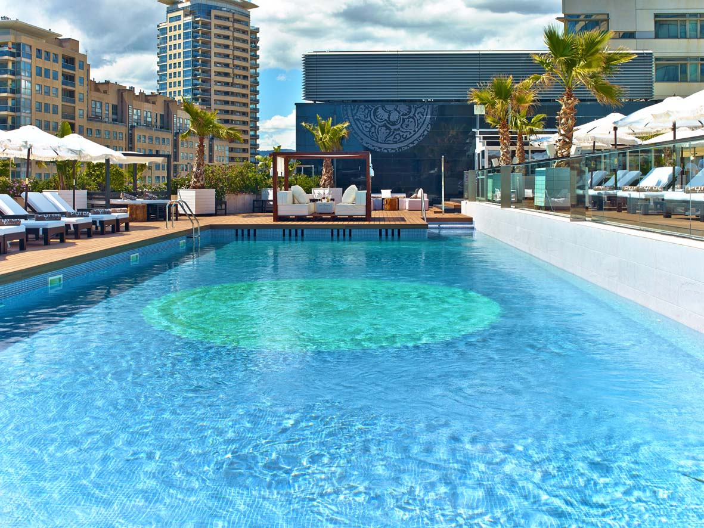
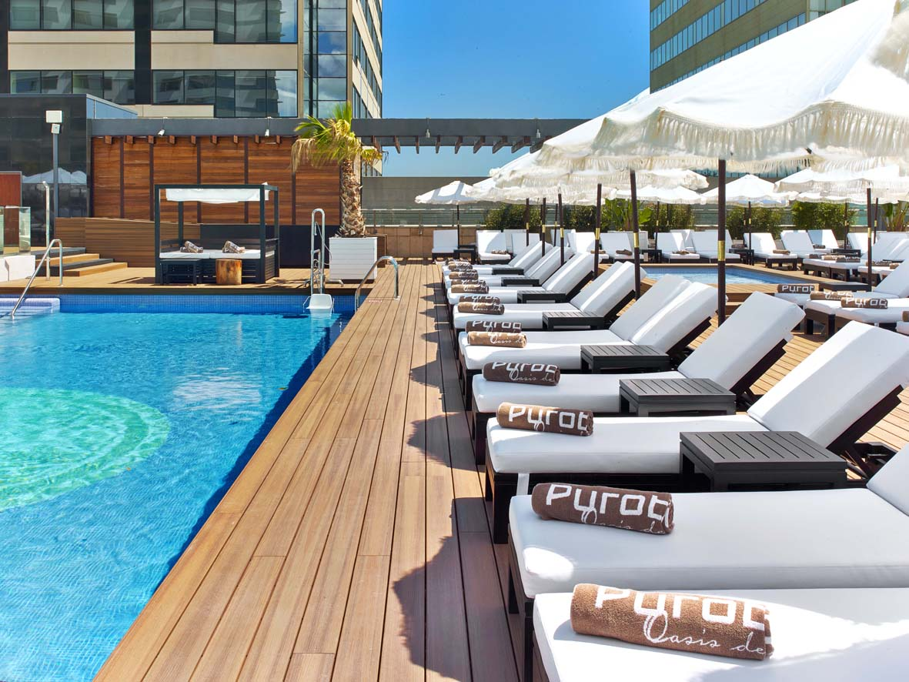
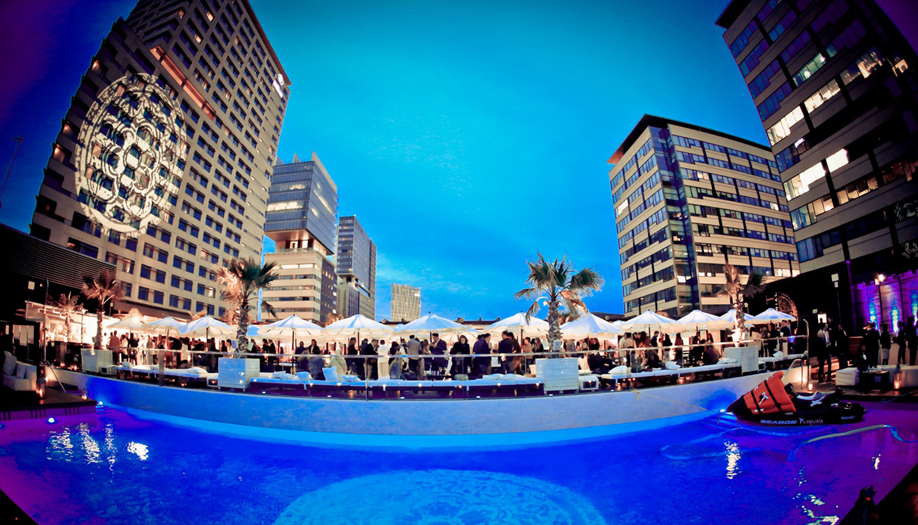
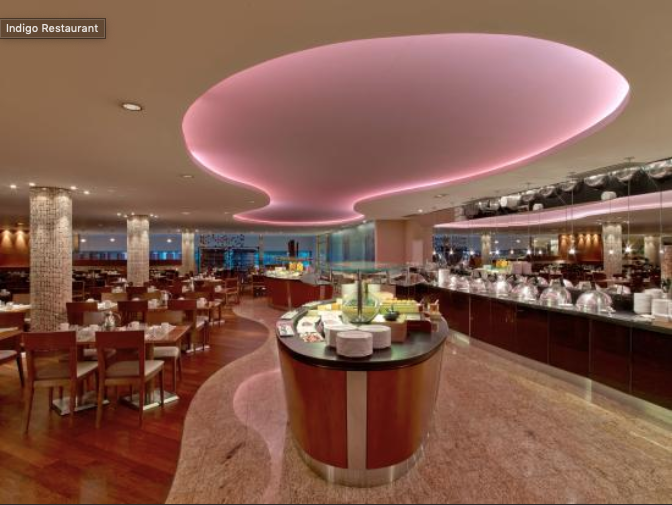
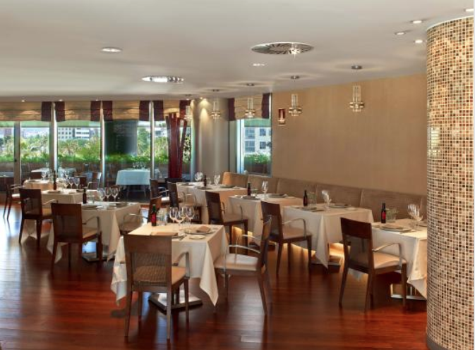
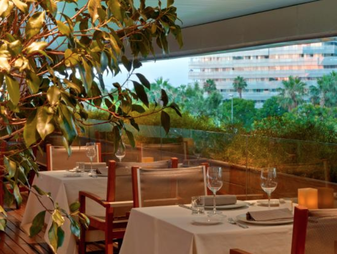

Puro Beach is located at the Hilton Diagonal’s terrace just 3 minutes walking from Hotel Barcelona Princess. But is not central located and there are no nightclubs in the area for the afterparty (in case guests would like to).
To go to El Principal you will need bus transfer from the hotel but it is located between Passeig de Gràcia and Rambla Catalunya, two of the most important streets of the city, so you will find a lot of bars and nightclubs near the restaurant as Sutton or Bling Bling, for example… You can see it on the map below:
Puro Beach is a breathtaking place to enjoy a BBQ or Cocktail dinner around the pool and enjoy relaxed chill-out music and some drinks after dinner but the music is allowed only until 22.00h,the hotel has its own DJ and the maximum volum has to be 75ddB (A) after this hour they can stay but without music…
The huge terrace of the hotel Hilton Diagonal Mar has different areas. The Puro Beach area is the swimmingpool area, here you can see some pictures:



IMPORTANT NOTE:In the other area (La Pergola) will be another event. We won’t be mixed but they will see each others.
As backup, in case of bad weather, the option would be to do the dinner at Restaurant Indigo. It is located at the hotel’s first floor and it has a terrace (small) that will allow to prepare the BBQ menu.
  
Puro Beach offers different set menus, but we would recommend to choose one of the BBQ menus that are very suitable for this kind of atmosphere:
Blanc de Pacs (D.O. Penedès, España)
Macabeu, Xarel-lo, Parellada
Mas Petit (D.O. Penedès, España)
Cabernet Sauvignon, Garnacha
Ros de Pacs (D.O. Penedès, España)
Merlot, Syrah, Cabernet Sauvignon
Beer
Soft drinks
Still and sparking water
Coffee
Rates per person (1.5h): 31€ VAT incBlanc de Pacs (D.O. Penedès, España)
Macabeu, Xarel-lo, Parellada
Mas Petit (D.O. Penedès, España)
Cabernet Sauvignon, Garnacha
Ros de Pacs (D.O. Penedès, España)
Merlot, Syrah, Cabernet Sauvignon
Beer
Soft drinks
Still and sparking water
Coffee
Cava (Parellada, Viura / Macabeo, Xarello - D.O. Penedès)
House gin & tonics
Aperol spritz
Rates per person (1.5h): 47,50€ VAT incRates valid for 2019.
Net rates for CICERON
For a group of minimum 300 pax.
Cutting Edge Events management fee including in the detailed rates
VAT included.
Space blocked - Release date: August 15th, 2019